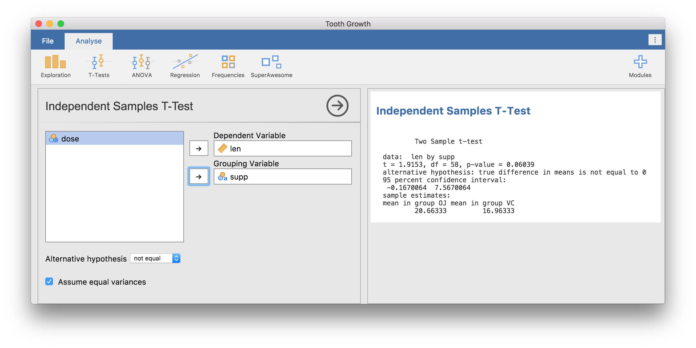

Implementing an Analysis
Source:vignettes/dev.jamovi.org-master/tuts0104-implementing-an-analysis.Rmd
tuts0104-implementing-an-analysis.RmdIn this section we will add the implementation, that is the R code, to perform our t-test analysis.
In jamovi analyses, the implementation lives in the .b.R
file, so if we look in our ttest.b.R file we see:
# This file is a generated template, your changes will not be overwritten
#' @rdname jamovi
#' @export
ttestClass <- R6::R6Class(
"ttestClass",
inherit = ttestBase,
private = list(
.run = function() {
# `self$data` contains the data
# `self$options` contains the options
# `self$results` contains the results object (to populate)
})
)This is another file that our call to jmvtools::create()
created. Now this may appear unfamiliar, and might not look like most of
the R code you’ve written, but that’s OK, you don’t really need to know
what’s going on here. What is going on here is that the
analysis is represented by an R6 class. For the curious, you can read
more about R6 classes here,
but all you really need to know is that you write your analysis in the
.run function, and you can safely ignore the rest.
You’ll also notice that the .run() function receives no
arguments. We access the values that the user specified (either in the
jamovi ui, or as arguments to the generated ttestIS()
function) through self. Again, this may seem a little
unfamiliar, but it is very straight forward.
As covered in the previous section, our
t-test has four options (as defined in ttest.a.yaml),
dep, group, alt and
varEq, we can access the values for each of these in our
analysis with:
self$options$depself$options$groupself$options$altself$options$varEq
Additionally, ttest.a.yaml defined the special
data option, which means we can access the data provided by
the user as a data frame (either the data loaded in jamovi, or the data
passed as an argument to ttestIS() function in R),
with:
self$dataNow we have access to the options, and access to the data, we can begin writing our analysis as follows:
ttestClass <- R6::R6Class("ttestClass",
inherit=ttestBase,
private=list(
.run=function() {
formula <- paste(self$options$dep, '~', self$options$group)
formula <- as.formula(formula)
results <- t.test(formula, self$data)
print(results)
})
)First, we take the values of self$options$dep and
self$options$group, which are both strings and assemble
them into a formula. Then we can call the t.test() function
passing in this formula, and the self$data data frame.
Finally, we print the result.
Now this analysis will and does work; however when running in jamovi,
the result of the print statement will appear at the terminal, rather
than in the application’s results area (where the user would like it).
To remedy this, rather than simply printing the results, we assign the
results to the analysis’ results object. When run in an R session, the
results will still be printed, but when run in jamovi, the results will
appear in the results panel. We assign to the analysis’ result object
using (you guessed it), self$results. Our new function will
now read:
ttestClass <- R6::R6Class("ttestClass",
inherit=ttestBase,
private=list(
.run=function() {
formula <- paste(self$options$dep, '~', self$options$group)
formula <- as.formula(formula)
results <- t.test(formula, self$data, var.equal=self$options$varEq)
self$results$text$setContent(results)
})
)In this new function, we get the results element called
text from self$results, and call
setContent() with the results from the t-test. We’ll cover
results elements in greater depth in the next section, but for now this
is all you need to know.
So now our analysis is implemented, it’s time to install it and try it out. Install the module with the usual:
jmvtools::install()Now open the Tooth Growth data set from the jamovi
examples (File -> Examples -> Tooth Growth). Assign the
len column to the Dependent Variable, and the
supp column to the Grouping Variable. You
should have something like the following:

Similarly, we can install this module as an R package using the
devtools package (not to be confused with
jmvtools), and run the same analysis in an interactive R
session:
devtools::install()
library(SuperAwesome)
data(ToothGrowth)
ttest(data=ToothGrowth, dep='len', group='supp') Independent Samples T-Test
Two Sample t-test
data: len by supp
t = 1.9153, df = 58, p-value = 0.06039
alternative hypothesis: true difference in means is not equal to 0
95 percent confidence interval:
-0.1670064 7.5670064
sample estimates:
mean in group OJ mean in group VC
20.66333 16.96333 Before we continue, astute readers will have realised that assembling
our formula with paste is problematic. If either column
name has spaces or special characters, paste will produce a bad formula.
For example, if the user specified a dependent variable called
the fish — the resultant formula would be
the fish~group, and the call to as.formula()
would fail:
as.formula('the fish~group')## Error in parse(text = x, keep.source = FALSE) :
## <text>:1:5: unexpected symbol
## 1: the fish
## ^The names of the columns making up the formula need to be escaped, or
quoted. Fortunately, jmvcore provides the function
constructFormula(), which assembles simple formulas
appropriately escaping column names:
constructFormula('the fish', c('group'))## [1] "`the fish`~group"We can modify our analysis to use this instead:
ttestISClass <- R6Class("ttestISClass",
inherit=ttestISBase,
private=list(
.run=function() {
formula <- constructFormula(self$options$dep, self$options$group)
formula <- as.formula(formula)
results <- t.test(formula, self$data)
self$results$text$setContent(results)
})
)The jmvcore package contains many such useful functions.
It would be worth checking them out.
Next: Debugging an Analysis